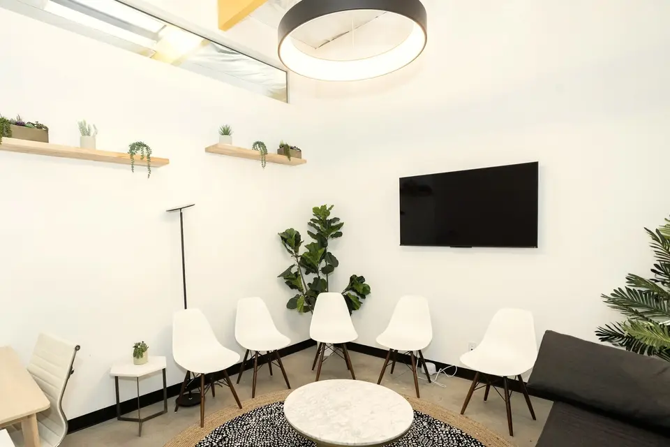

看護師募集 常勤1名・パート1名
手は、
覚えている。
気持ちが追いつくまで、
となりで。
最初の1か月は、先輩の看護師がとなりについて、採血・点滴を一緒に行います。ブランクのある方も、応募できます。
- 勤務
- 平日 8:45〜18:15土曜 8:45〜12:45
- 夜勤
- 夜診・夜勤・オンコールなし
- 給与
- 常勤 月給26万〜31万円パート 時給1,700〜1,900円
「久しぶりの方ほど、ていねいに迎えたいと思っています。」
院長のメッセージより（全文）
入職後の流れ（例）
ひとりで立つ日まで、
となりにいます。
-
応募の前に
見学だけでも、どうぞ
診療の様子と、処置室・物品の置き場所をご案内します。見学のあとに応募するかどうかを決めていただいてかまいません。
-
面接
ブランクの年数と、不安なことを聞かせてください
最後に採血をしたのはいつか、どの手技が気になるか。勤務の日数・時間帯の希望も、面接で率直にご相談ください。
-
入職から1か月
採血・点滴は、先輩がとなりで
最初の1か月は、先輩の看護師がとなりについて、採血・点滴を一緒に行います。手順の確認から始めて、少しずつ手を動かす量を増やしていきます。
写真はイメージです -
1か月のあと
ひとりで担当。迷ったら、すぐ呼べる距離に
外来の看護師は3名で、同じ処置室で動いています。ひとりで担当するようになってからも、確認したいことはその場で聞けます。
働く時間
夜は、家で過ごす
看護師に。
夜診・夜勤・オンコールはありません。平日は 8:45 から 18:15 まで、お昼に2時間の休憩があります。木曜の午後・土曜の午後・日曜・祝日はお休みです。
| 時間帯 | 月 | 火 | 水 | 木 | 金 | 土 | 日 |
|---|---|---|---|---|---|---|---|
| 8:45〜12:30 | ● | ● | ● | ● | ● | ● | ／ |
| 14:30〜18:15 | ● | ● | ● | ／ | ● | ／ | ／ |
●勤務 ／お休み。土曜は12:45まで。祝日・夏季・年末年始もお休みです（年間休日数は求人票に記載）
仕事の内容
待合室の「こんにちは」から
始まる仕事。
一般内科・生活習慣病・健康診断・予防接種の、外来だけのクリニックです。毎月通ってくる患者さんが多く、顔と名前を覚えていく仕事です。
- 外来診療の補助
- 採血・点滴・心電図・予防接種
- 健康診断の補助
- 電話の対応
医師1名・看護師3名・医療事務4名。開院から12年です。

院長のメッセージ
久しぶりの方ほど、
ていねいに。
募集要項
条件を、すべて先に。
- 職種
- 看護師（正看護師・准看護師）
- 雇用形態
- 常勤（正職員）1名／パート1名
- 応募資格
- 正看護師または准看護師の免許をお持ちの方。ブランクのある方も応募できます
- 仕事の内容
- 外来診療の補助、採血・点滴・心電図・予防接種、健康診断の補助、電話の対応
- 就業場所
- あさひ台内科クリニック（〇〇県〇〇市あさひ台0-0-0）。転勤なし
業務と就業場所の変更の範囲：変更なし - 勤務時間
- 平日 8:45〜18:15（休憩 12:30〜14:30）／土曜 8:45〜12:45
夜診・夜勤・オンコールなし。パートの勤務日・時間帯は面接でご相談 - 時間外労働
- 診療の状況により、終業後の片付けなどで発生することがあります（時間外手当を支給）
- 休日
- 木曜午後・土曜午後・日曜・祝日、夏季休暇・年末年始休暇（年間休日数は求人票に記載）
- 給与
- 常勤：月給 26万〜31万円（経験により決定）
パート：時給 1,700〜1,900円
交通費支給（上限あり） - 試用期間
- 3か月（期間中の条件は同じ）
- 社会保険
- 常勤は健康保険・厚生年金・雇用保険・労災保険に加入。パートは勤務時間に応じて加入
- 受動喫煙対策
- 敷地内禁煙
- 入職後
- 最初の1か月は、先輩の看護師がとなりについて、採血・点滴を一緒に行います
- 応募方法
- お電話、または下の応募フォームから。見学のみも受け付けています
- 募集者
- あさひ台内科クリニック 〒000-0000 〇〇県〇〇市あさひ台0-0-0 電話 00-0000-0000
見学・応募
まずは、見学だけでも。
見学のあとに応募するかどうかを決めていただいてかまいません。「ブランクがどのくらいなら大丈夫か」といったご質問だけでも、お気軽にどうぞ。
お電話（採用担当）
00-0000-0000
受付 平日 9:00〜18:00（診療中は、折り返しのお電話になることがあります）